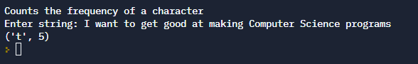
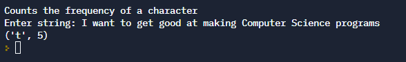
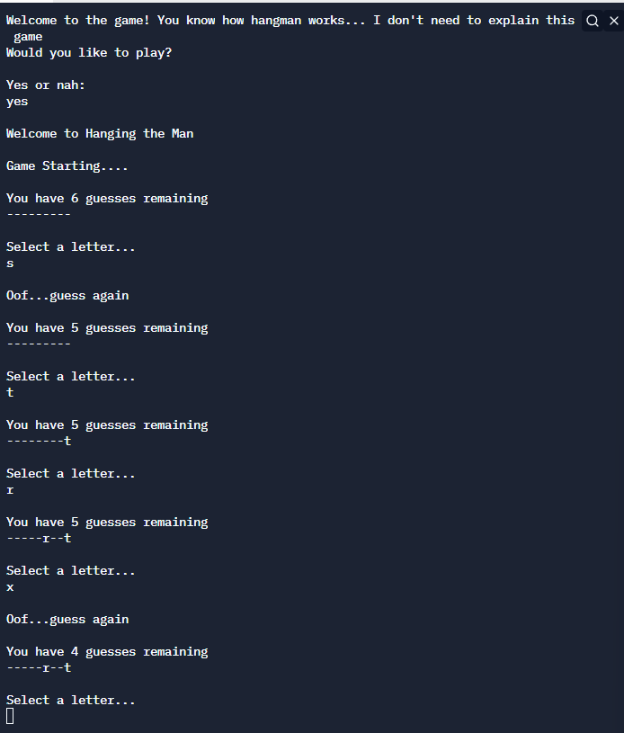
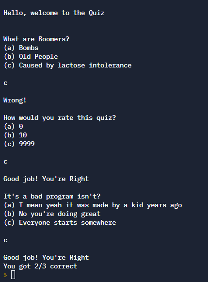

Frequency Finder
Simple Python program that counts the number of the most frequently used character in an input.
You can click the title of project to be taken to the repo
Simple Python program that counts the number of the most frequently used character in an input.
Simple Python replication of the game Hangman.
Simple Python Quiz of 3 (adjustable) questions. It was made years ago when I was first starting out.
Python is definitely useful. I am seeking to expand my proficiency in the language and will start utiizing it much more in future projects. First, I would need to do a bit of catching up and learn more about it.